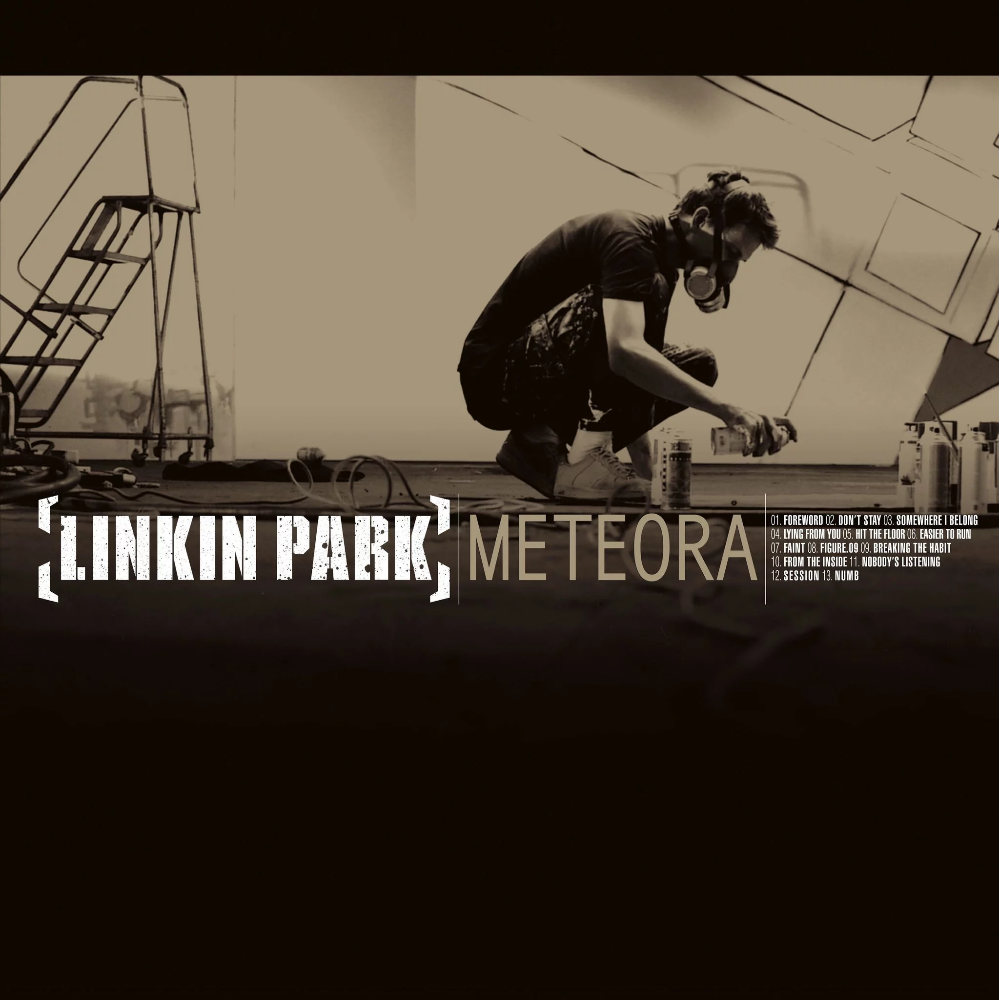

Discografía completa

Hybrid Theory 2000
Álbum debut. Nu-metal + rap-rock. Vendió +30 millones.
In the End

Meteora 2003
Consolidación total. Sonido más pulido y épico.
Numb

Minutes to Midnight 2007
Madurez, política y rock más clásico.
What I've Done

A Thousand Suns 2010
Concepto anti-guerra. Experimental y electrónico.
The Messenger

Living Things 2012
Mezcla de lo electrónico y lo clásico.
Castle of Glass

The Hunting Party 2014
Vuelta al rock pesado y crudo.
Final Masquerade

One More Light 2017
El más melódico y emocional. Último con Chester.
One More Light

Meteora 20th Anniversary 2023
Edición especial + canciones inéditas como “Lost”.
Lost (con Chester)

From Zero 2024
Primer álbum con Emily Armstrong y Colin Brittain.
The Emptiness Machine